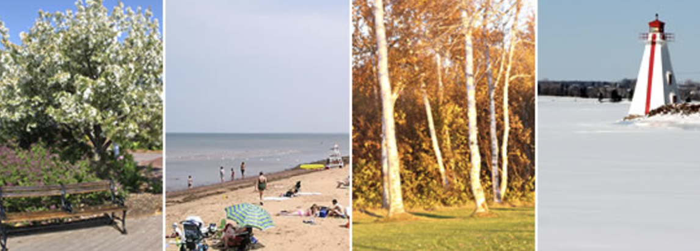
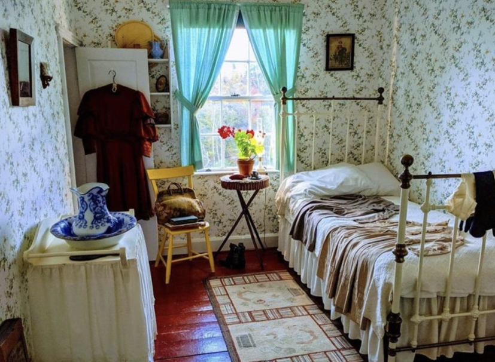
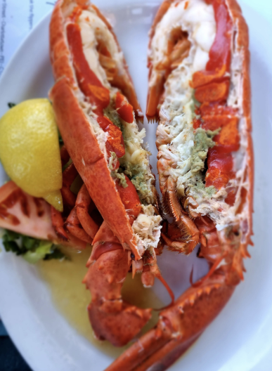
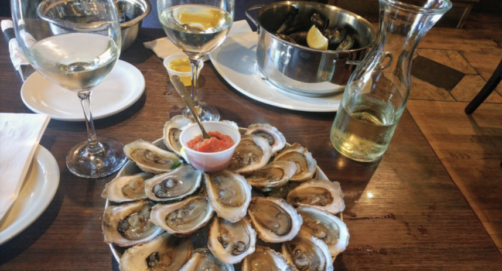

1. 프린스 에드워드 아일랜드를 알아보자

PEI는 캐나다 동쪽 끝의 작은 섬으로 캐나다에서 가장 면적이 작은 주이다. 토론토에서 자동차로는 16시간이 걸리기 때문에 비행기를 타고 가야한다. 유명 소설 빨간머리 앤의 배경이 되는 곳으로 잘 알려져 있다. 빨간머리 앤의 가장 중요한 무대가 된 초록지붕집은 이곳 최대의 명소이다. 또 빨간머리 앤 뮤지컬은 가장 오래 공연중인 뮤지컬 작품으로 기네스북에 등재되기도 했다.
2. PEI의 지리와 기후
조그만 섬이라 대륙과는 길이 13KM의 다리로 연결되어 있다. 그러나 중앙 분리대도 없고 2차선인데다가 통행료도 비싸 사실 잘 이용하진 않는다. 그러나 다리가 매우 길기 때문에 마치 바다 위를 나는듯한 기분을 얻을 수 있다고 한다. 기후는 주변 지역에 비해 온화하지만 봄이 거의 없는 편이며 섬이라 비도 많이 오고 바람도 많이 분다. 겨울이 긴 편인데 보통 11월부터 4월까지이다. 춥고 눈이 많이 와 공공기관이 휴관하는 경우도 잦다고 한다
3. PEI에서 방문해봐야 할 곳
1. 컨페더레이션 예술 센터
이곳은 가장 유명한 빨강머리앤 뮤지컬을 하는 장소이기 때문에 많은 여행자들이 찾는 곳이다. 공연을 하지 않는 겨울에도 세계적인 컬렉션 전시와 다양한 공연, 도서관, 기념품 등 볼거리가 많아 방문해볼만 하다.
2. 그린 게이블스
일명 초록지붕집이라고 불리는 그린 게이블스는 소설 빨강머리 앤의 주요 무대로 보여지는 집이다. 근처에는 몽고메리 작가의 생가와 박물관도 있어 빨강머리 앤 작품에 애정이 깊다면 꼭 방문해봐야 할 곳이다. 근처 매장들은 빨간 머리를 곱게 짠 인형 등을 구매할 수 있다. 5월부터 10월까지만 문을 열기 때문에 참고해라.
4. PEI에서 먹을 수 있는 것들
1. 바닷가재
PEI를 여행하는 사람들은 하루에 한번씩 랍스터를 먹는다는 현지인의 말을 들을 수 있다. 수산업, 그 중에서도 랍스터가 잘 잡히는 PEI에서는 신선하고 큰 바닷가재를 접할 수 있다. 랍스터를 활용한 다양한 요리를 먹을 수 있는데 샌드위치, 버거, 베이컨, 샐러드, 타코 등 거의 모든 음식에 랍스터 살을 올려서 먹을 수 있다 ! 이곳에서는 매끼 랍스터를 먹는 일이 거짓이 아니게 된다
2. 굴과 홍합
해산물을 쉽게 접할 수 있는 이곳에서는 어패류도 흔하다. PEI의 홍합과 굴은 매우 많이 생산되어서 싼 값에 많은 양을 즐길 수 있다. 지방이 많아서 씹는 맛이 일품이라고 한다. 레스토랑의 토마토 파스타에도 홍합이 들어가고 식당에서는 신선한 생굴을 먹을 수 있다.